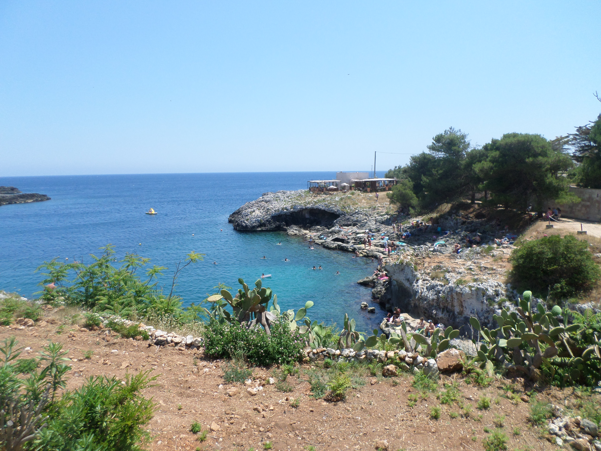
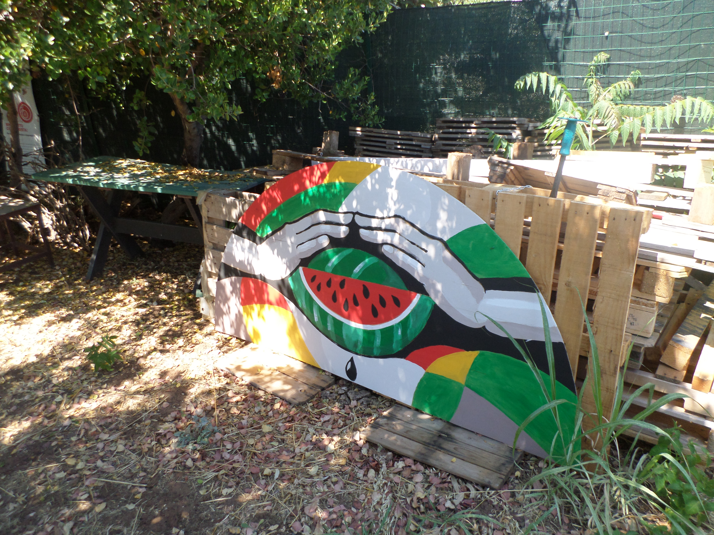
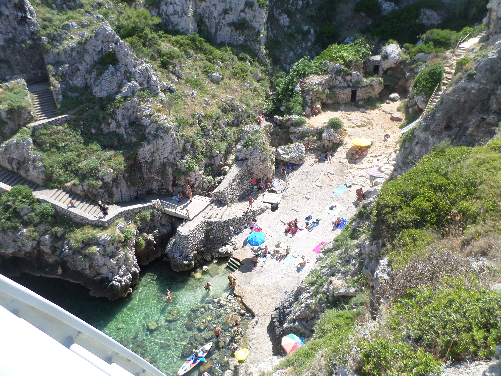

Just Do Stuff
I recently read a post that said, “Perfection is a smart person’s way of procrastinating.”
For my sake, I hope that’s true, but here is why this struck me.
This website perfectly exemplifies the mentioned post. I’ve thought about making something like this for a while, but there was always some reason why it wasn’t quite the right time, or why it wasn’t good enough yet. So part of putting this website out there is just me trying to ignore that.
I’m always looking to make act on an idea in the most perfect way possible. When it makes sense or when I ‘feel’ good or only after a perfect night’s sleep. So far though, that hasn’t worked as well as I’d have liked it to.
So many thoughts and ideas have crossed my mind over the years, and I couldn’t tell you where they are anymore. Some thoughts and ideas that I did feel passionate about, are now just completely forgotten.
I also recently read 50 cent say this. “Just do s**t”.’
After reading that, I started noticing something about the people around me who have been quite successful in starting their own project or business.
They don’t seem to spend forever thinking about whether they should start.
They... Just... Do... It.
And when they do think about it, it seems to be through the lens of pragmatism and optimism.
Pragmatically: HOW are they going to do it? What are the actual nuts and bolts?
Optimistically: why SHOULD they do it? Maybe there’s money in it, an opportunity to meet people, or simply some personal fulfilment.
Of course, people still think deeply before embarking on something and weigh up the risks and rewards. But maybe they’re just more comfortable with the possibility — or inevitability — of failure.
To me, it seems like they don’t overthink it.
Which is my greatest enemy.
If you’re an overthinker like I am, maybe there’s a part of you that’s overly cautious and that inhibits you from accomplishing certain things.
I’m trying to reframe my overthinking into what that really is though.
It’s a skill I’ve had my whole life. I’m analytical and very thorough in how I process and perceive information. These are good skills to possess but are ones to be harnessed properly as I’m now learning.
For me, creating this website and blog is me telling myself that I am putting out a website with my name on it, that doesn’t look great as of today.
But getting a start, and actually doing it, is exactly what that is.
It’s a start.
P.s here are some nice photos I took in Italy recently


